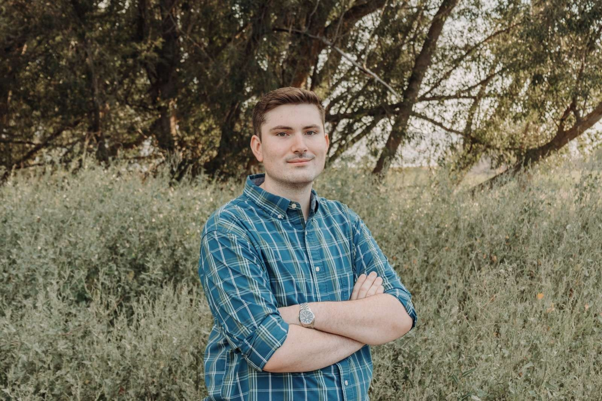

Russell Oviatt
Hi, my name is Russell Oviatt. I am from Afton, Wyoming which is part of a greater area called Star Valley which may be more recognizable.
I am a CIT Major although with that major no longer existing, I am considering changing to be a cybersecurity major.
I am not married but do have a girlfriend who also attends BYUI and is a psychology major, we've been dating for a little over 3 years.
I have three siblings, two sisters and a brother. My two older siblings, one of the sisters and the brother, have both graduated college while my younger sister is still in high school.
Outside of class I like to play video games, my favorite is probably either Bloodborne or Elden Ring and am really looking forward to the upcoming DLC and it's implications for future randomizers.
I used to read a lot too, but haven't been able to find as much time for that hobby recently, there's only so many hours in a given day. Back when I did read more extensively it was mainly fantasy and some science fiction. My favorite author is Robin Hobb specifically her books about FitzChivalry, I also like Brandon Sanderson (I'm one among many on that front) and Orson Scott Card although I've only read his books set in the Enderverse.